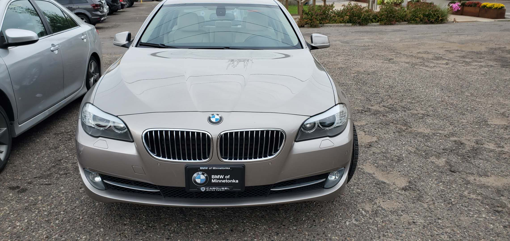

Hi, I am an international student from China. I am a BMW fan
and I an intresting in BMW.I want to creat this website because I want
more people learn more information about BMW. You can see the picture
on the left side. This is a BMW 535i Xdrive I bought last year.It was
my first car, and it was my favorite car growing up.